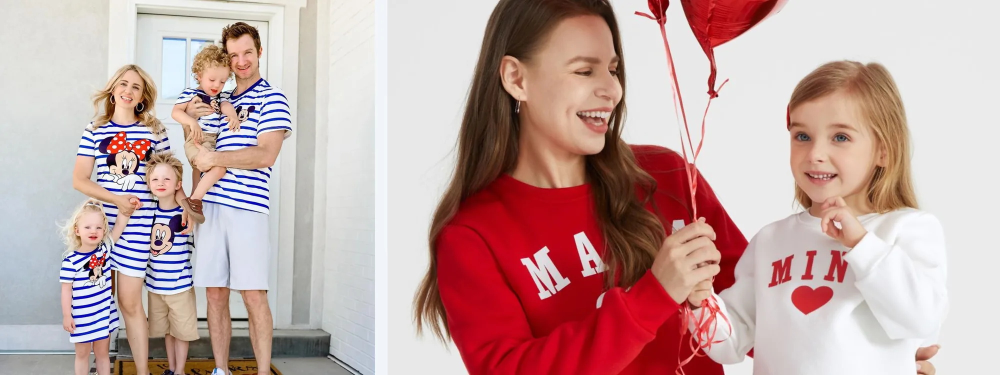
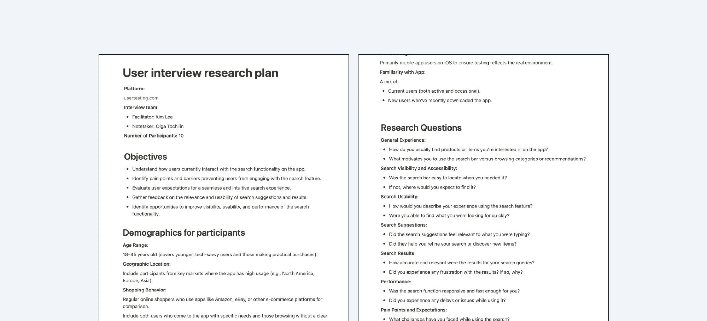
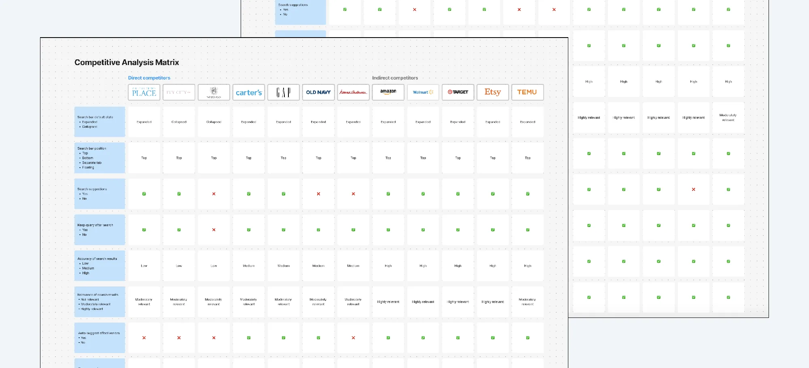
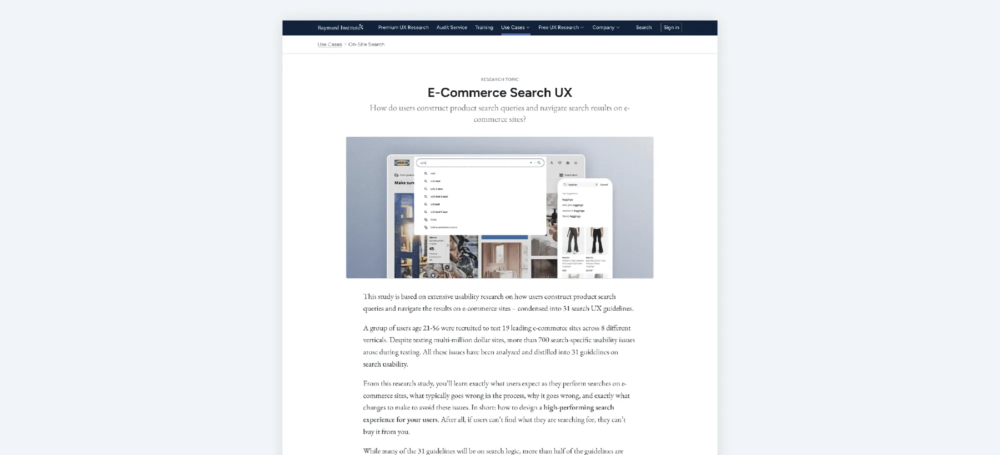
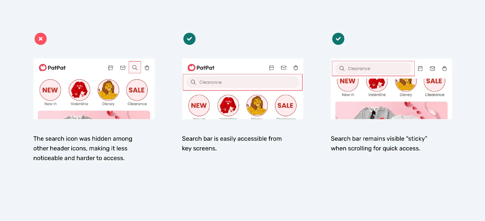
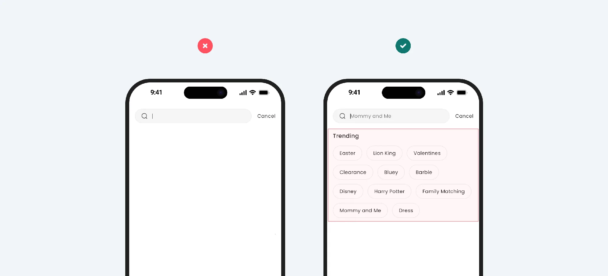
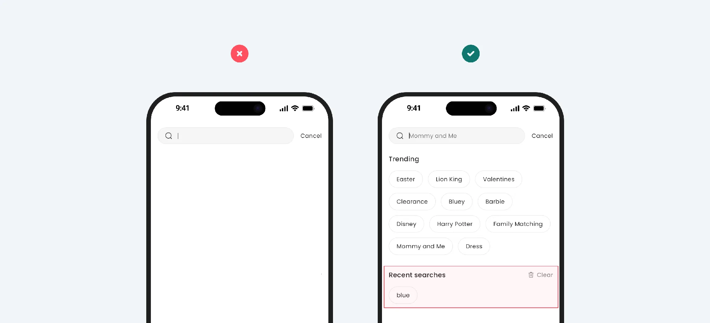
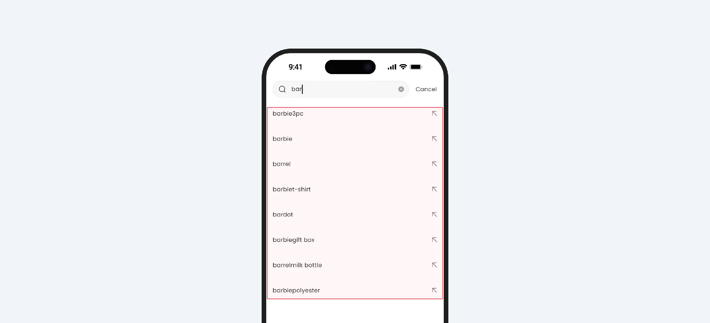
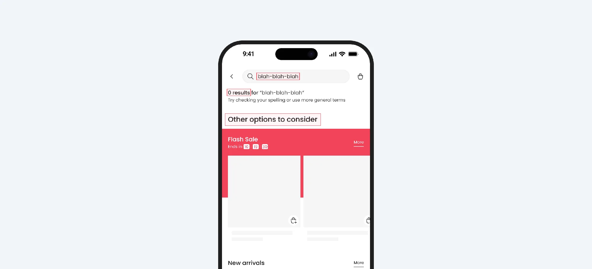
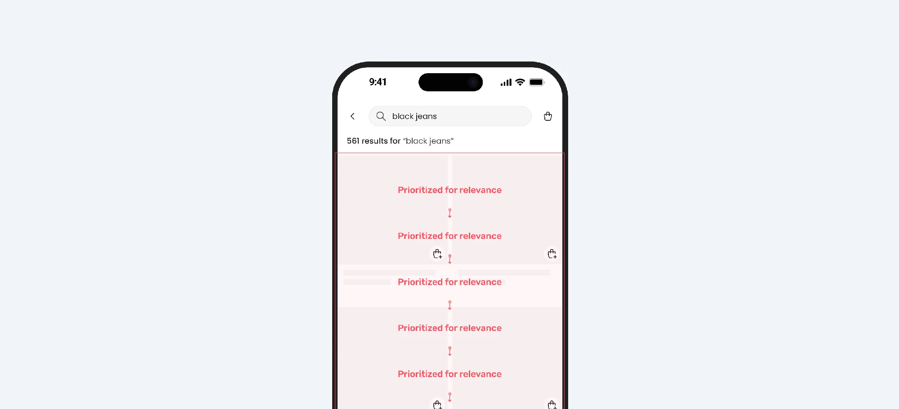

PatPat Search Revamp
Overview
In this case study, I’ll share my contribution to improving the search experience for the PatPat mobile app as part of the YML team. I worked with PatPat for a year on various iOS projects, but this case focuses on one that was not only designed but also implemented and analyzed.
Typically, in an agency setting, we don’t get to see the results of our work—we deliver and move on. However, this project was different, allowing me to stay long enough to see the impact of our efforts.
What is PatPat?
PatPat is a curated online boutique of fashionable matching outfits for the whole family to bring the crew together in style.

Problem and opportunities
Our analysis revealed that search performance was falling short. Collaborating with engineers, our product team gathered data to quantify the issues and confirm the need for improvements.
High Bounce Rate on Mobile
Approximately 62% of users exited the app within the first two minutes of use, indicating frustration or difficulty navigating to their desired content.
Low Search Usage
Only 18% of users engaged with the search functionality, indicating low adoption or usage based on the data available.
Search Drop-off
Among the users who used the search feature, 46% abandoned the process after viewing the results page, indicating they couldn’t find what they were looking for or didn’t trust the results.
How might we…
Improve the search experience of the Mobile App using best practices in usability to make it more intuitive, engaging, and effective, reducing user frustration and improving overall engagement.
Research01
User Interviews
Despite having quantitative data, we needed deeper qualitative insights into search usage. To address this, I collaborated with our researcher, to conduct a series of user interviews.
We recruited participants through the usertesting.com platform to gather firsthand feedback and better understand user behavior and pain points.

What we learned
Low Visibility
Many users mentioned that the search bar was not prominent enough, leading them to rely on browsing instead. They expected the search bar to be located at the top of the home screen but found it buried among other UI elements.
No search suggestions
Users noticed there were no suggestions while typing, which made it harder to find ideas. They expected suggestions, but the search only worked for exact words, making it less helpful.
Irrelevant Search Results
A significant number of users reported that the search results didn’t always match their queries. For example, searching for “shoes” might display unrelated products, leading to confusion and dissatisfaction.
Missed Filters and Sorting Options
Some users pointed out that they wanted more filters or sorting options directly within the search results (e.g., price range, categories). The lack of these features made the search feel incomplete.
Competitive analysis matrix
In addition to gathering quantitative and qualitative insights, I conducted a competitive analysis to benchmark search functionality against both direct and indirect competitors.
This analysis helped identify common industry standards and emerging trends in search experiences.
I evaluated key metrics such as search bar visibility, autosuggestions, typo correction, result relevance, filtering and sorting options, the handling of empty search results and more.

“Desk” research
Finally, I conducted desk research to gather insights from industry-leading sources without direct user interaction. This involved reviewing best practices, usability guidelines, and research findings from reputable organizations such as Baymard Institute, Nielsen Norman Group (NNG), and Forrester Research.
This research provided a solid foundation for our decisions, helping us align with established UX principles and identify proven strategies to improve the search experience.

Product decisions
After conducting research and gathering feedback, the following product decisions were made.
Search bar placement and visibility
Ensure the search bar is easily accessible from key screens and remains visible when scrolling for quick access.
Display popular and trending searches
Showcase trending or popular searches to inspire users and encourage exploration.
Retain recent search queries
Store and display users’ recent search queries to help them quickly revisit previous searches without retyping.
Implement effective autosuggestions
Introduce an autosuggest feature that offers relevant suggestions as users type, helping them find items faster and stay focused on their intent.
Preserve search queries after submission
Ensure the original search input remains visible in the search bar after submission. This helps users refine their search without retyping their query from scratch.
Correct typos automatically
Integrate typo detection and correction to assist users in finding relevant products even if they enter incorrect search terms.
Display the number of search results
Show users the total number of matching results to help them gauge the effort needed to browse through available options.
Avoid ‘no results’ dead ends
Instead of blank pages, suggest related items or alternative search queries when no exact matches are found.
Provide accurate and relevant results
Search results should prioritize relevance and accuracy to help users find what they need quickly. The most relevant items should appear on the first page.
Out of scope
Some features were left out of scope due to their complexity and were planned as standalone projects:
Filters and sorting
This feature was too large to fit within the scope of the project and was prioritized for future development.
Android and web apps
The team chose to experiment on iOS first, the most popular platform, before expanding to web and Android if successful.
Search results layout
Since the store focuses solely on clothing, the product team considered layout optimization a lower priority.
Design02
Search bar placement and visibility
The search bar has been improved by placing it prominently on key screens and ensuring it remains visible while scrolling. This enhancement makes it easier for users to locate and use the search function without unnecessary effort.

Trending searches
Popular search suggestions have been introduced to inspire users and encourage exploration. This enhancement helps users discover trending items and engage with the app even when they don’t have a specific product in mind.

Recent search queries
Recent search queries have been introduced to help users quickly revisit previous searches without retyping. This improvement enhances convenience and encourages repeated engagement with the search feature.

Autosuggestions
An autosuggest feature has been implemented to provide relevant suggestions as users type, helping them find items faster and stay focused on their intent.

Preserve search queries after submission
The search input now remains visible in the search bar after submission, allowing users to refine their search without needing to retype their query from scratch.
Display the number of search results
The total number of matching results is now displayed, helping users gauge the effort needed to browse through available options and make informed decisions.
Spell Correction
Typo detection and correction have been implemented to help users find relevant products even if they enter incorrect search terms, ensuring a smoother search experience.
Improved ‘no results’ page
The ‘no results’ page has been enhanced with an “Other options to consider” section, featuring flash sales, new arrivals, and trending items. This update helps users explore relevant products even when their initial search doesn’t yield exact matches.

Accurate and relevant results
Search relevancy has been significantly improved by refining the ranking algorithm to consider multiple parameters, each with a different weight, ensuring users find what they need quickly.
The most relevant items are now prioritized and appear first, enhancing the overall shopping experience.
For example, if a user searches for “black jeans,” search results are ranked based on:
- Exact match – Items with “black jeans” in the title rank highest.
- Popularity – Frequently bought jeans appear at the top.
- Ratings – Higher-rated products rank above lower-rated ones.
- Availability – In-stock items show before limited or out-of-stock options.
- etc.

Results03
Increased user retention on mobile
Following the search experience improvements, only 38% of users exited the app within the first two minutes, indicating a significant reduction in frustration and improved content discoverability.
Higher search engagement
Search usage increased to 52%, showing that users found the feature more accessible and intuitive, leading to greater adoption and interaction.
Reduced search drop-off
Search drop-off decreased to 24%, demonstrating improved trust in the search results and a better alignment with user expectations.
Key takeaways04
This project reinforced the importance of a user-centered, data-driven approach to improving search functionality. By combining qualitative feedback with quantitative data, collaborating across teams, and benchmarking industry best practices, we successfully enhanced the search experience and drove meaningful improvements.
- Collaboration is key: Close teamwork between design, product, and engineering ensured feasible and impactful solutions.
- Balancing scope and priorities: Some features were deferred for future implementation, highlighting the need to focus on high-impact improvements first.
- Data-driven design works: Using research insights to guide decisions led to measurable improvements in user engagement and satisfaction.
Thank you for scrolling all the way!